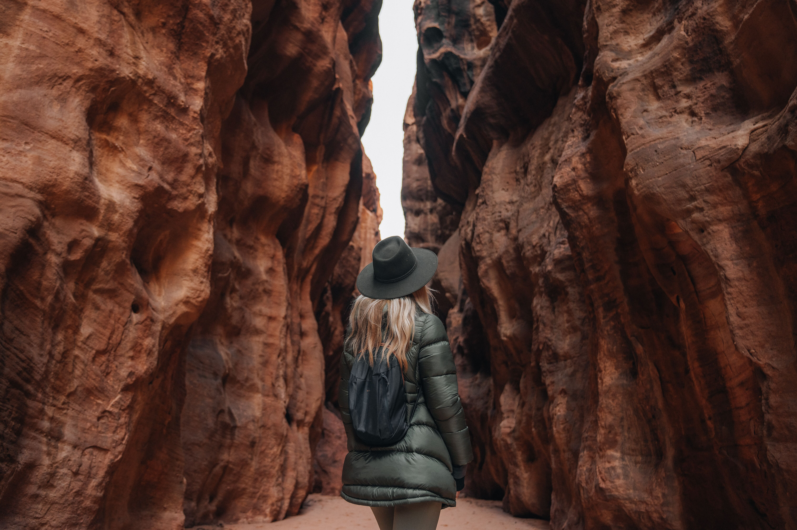
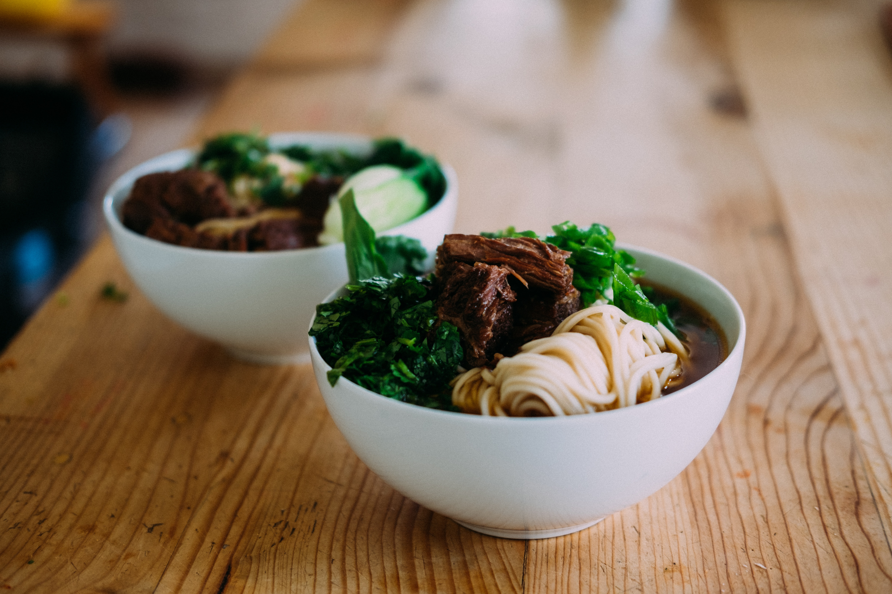
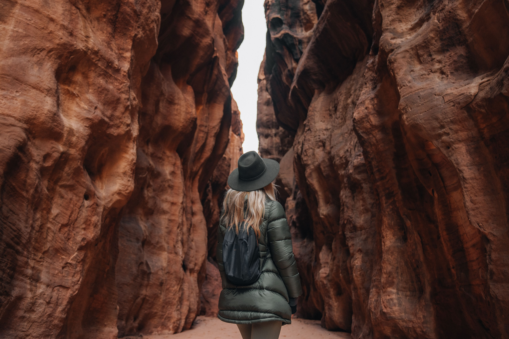
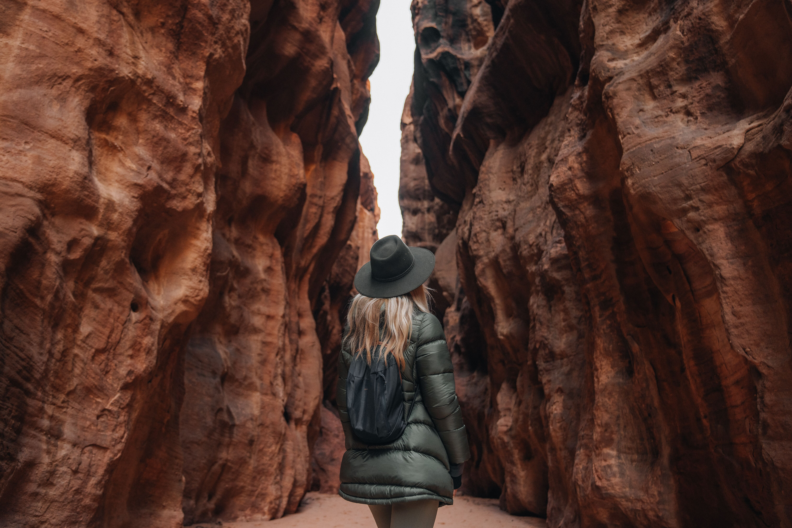

Embark on a journey with me as a explore the wonders of the world.From bustling cities to serene landscape,this blog is your passport to thrilling experiences and captivating
destinations.Somewhere in the mountains

About Me
My love affair with travel began with a single steo onto foreign soil.I still vividly recall my first
adventure a spontaneous weekend getaway to a nearby town.It was a modest start, but the thrill of
exploring unfamiliar streets,tasting new flavors,and immersing myself in a different culture left an
indelible mark.
That initial journey ignited a fire within me,and i sonn found myself craving more.I delved into
planning and embarked on progressively ambituius trips.From the bustling markets of Marrakech to the
erene temples of Kyoto,each destination became a chapter in my ever-evolving travel narrative.
One pivotal trip that stands out was my solo expedition through thr vibrant cities of Europe.Navigation
ancient streets and discovering hidden coutryards,i forged an unbreakable bond with the essence of
wanderlust.It was during this journey that realized the profound impact travel could have on personal
growth and seld-discovery.
One pivotal trip that stands out was my solo expedition through thr vibrant cities of Europe.Navigation
ancient streets and discovering hidden coutryards,i forged an unbreakable bond with the essence of
wanderlust.It was during this journey that realized the profound impact travel could have on personal
growth and seld-discovery.
One pivotal trip that stands out was my solo expedition through thr vibrant cities of Europe.Navigation
ancient streets and discovering hidden coutryards,i forged an unbreakable bond with the essence of
wanderlust.It was during this journey that realized the profound impact travel could have on personal
growth and seld-discovery.
Destinations
Explore the incredible places I've had the privilege to visit.
Embarking on a journey is an exhilarating experience,but it can also come with its share of challanges.Over
the years I've gathered valuable insights and practical tips to make your travels smoother and more
enjoyable.Here are some of my tried-and-true travel tips:
Plane ahead,but embrace spontaineity:
While it's essential to have a rough itineray,leave room for spontaneity.Some of the best travel moments
happen when you go off the beaten path.
Pack light:
While it's essential to have a rough itineray,leave room for spontaneity.Some of the best travel moments
happen when you go off the beaten path.
Stay connected:
While it's essential to have a rough itineray,leave room for spontaneity.Some of the best travel moments
happen when you go off the beaten path.
Local cousine
While it's essential to have a rough itineray,leave room for spontaneity.Some of the best travel moments
happen when you go off the beaten path.
Learn basic phrases
While it's essential to have a rough itineray,leave room for spontaneity.Some of the best travel moments
happen when you go off the beaten path.
Travel insurance
While it's essential to have a rough itineray,leave room for spontaneity.Some of the best travel moments
happen when you go off the beaten path.
Stay safe
While it's essential to have a rough itineray,leave room for spontaneity.Some of the best travel moments
happen when you go off the beaten path.
Inmerse in local culture
While it's essential to have a rough itineray,leave room for spontaneity.Some of the best travel moments
happen when you go off the beaten path.
Pack on open mind
While it's essential to have a rough itineray,leave room for spontaneity.Some of the best travel moments
happen when you go off the beaten path.
Remember every travel journey is unique.These tips are here to guide you,but you own experiences and
discoveries will be the true treasures of your adventure.Safe travels!
Food Adventures
One of the most delighful aspects of travel is the opportunity to savor the diverse flavors of the world.Join
me an a gastroonomic journey as we explore the culinary wonders of the destinations I've been fortunate to
visit
From sizzling street food stalls to Michelin starred restaurants.I've relished every bite and discovered that
food is not just sustenance;It's doorway to culture,history,and human connection.
Here are some of my most memorable food adventures:

Ingulding in Gelato in Rome,Italy:
Rating
Tasting Authentic Phoi in Hanoi,Vietnam:
Rating
Spice Markets in Maroco:
Rating
Street Tacos Mexico:
Rating
Contact Me
If you have any questions,suggestions,or jist want to say hello,feel free to get in touch with me.I'd love to
here from you!

 



.jpg)